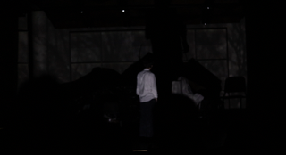
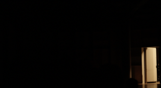

back
caved in
To accompany the play written by DeLaRosa and set design by Barrat, I have composed a prelude, a postlude, 3 interludes for scene changes, and a Max Patch to give 4 channel ambience during the scenes.
DeLaRosa's play deals with people who abandon society to isolate themselves, thinking they are a danger to those around them.
My prelude and postlude exist to frame the play, providing a sonic exploration of DeLaRosa's exploration of desire, shame, and spirituality.
During the play itself, my music aims to establish a clear "other" when the characters are in the cave itself.
To achieve this, stirng players and dancers shuffle around the hall, giving a sense of a group of people walking around the audience through vast tunnels.
I also use 4 channel surround sound to play frequencies at the very edge of human hearing, just giving a "colored silence."
In the finale of the play, in complete darkness, dancers destroy the set piece on stage with hammers, while pounding synths resound throughout the audience.


